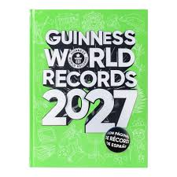

También tengo dos recolectas cofrades durante el año en función de la semana santa, es decir del viernes antes del viernes de dolores al domingo despues del domingo de resurreccion, recolecta oficial al dia siguiente empezaría la anual, como su nombre indica: 1 año de recolecta

Hoy, 13-10-2026, acabo de recibir el primer articulo del dia, un anuario de la Algaba 2026, espero recibir algunos más hoy para seguir adelante con todo esto.
De nuevo, hoy 22-10-2026, acabo de recibir 6 articulos, los primeros del dia, 5 programas de semana santa y un libro de la semana santa 2026
Despues de varios dias sin recibir artiulos, hoy 27-10-2026 he recibido 8 articulos
Despues de varios dias sin rebir articulos, hoy 3-11-2026 he recibido 2 articulos
Ayer 4-11-2026 recibí un montón de articulos
Hoy 5-11-2026 he recibido 11 articulos, de cordoba y sevilla
Hoy 6-11-2026 he recibido 3 estampitas y un programa de utrera
En el libro habrá una sección de "personas o negocios colaborativos en este Guiness World Records" en la que estarán todas las personas que me hayan dado algo para la colección.
Pagina inicial guinness world recordsEsto es que cada vez que recibo uno mas articulos le pongo la fecha para saber cuando me lo dieron
Esto es para saber cuantos articulos tengo en la colección
Recojo articulos de todo tipo, cualquier lugar y año, cuanto mas antiguo, mas legendario
para contactar conmigo visitar pagina contacto
contacto articulosProyecto: Colección cofrade Inicio colección: 2019 Objetivo Guinness World Record: 2028 Articulos actuales: 1000 Objetivo articulos: 100,000
Opino que esto es algo que me está llevando tiempo hacer, ya llevo mas de 8 años con esto y ahí sigo sumando articulos
En 2028 lo consigo
Autor: Martin Motilla Ayuso